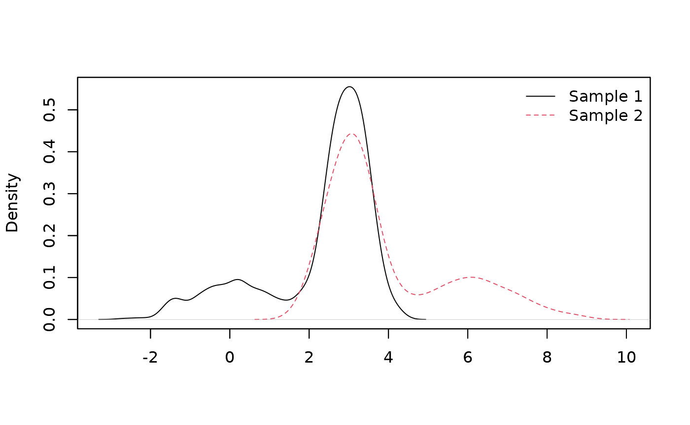

Hypothesis test in admixture models
Xavier Milhaud
Source:vignettes/test-hypothesis.Rmd
test-hypothesis.RmdWe remind that a random variable \(X\) following an admixture distribution has cumulative distribution function (cdf) \(L\) given by \[L(x) = pF(x) + (1-p)G(x), \qquad x \in \mathbb{R},\] where \(G\) is a mixture component whose distribution is perfectly known, whereas \(p\) and \(F\) are unknown.\ In this setting, if no parametric assumption is made on the unknown component distribution \(F\), the mixture is considered as a semiparametric mixture. For an overview on semiparametric extensions of finite mixture models, see (Xiang and Yang 2018).
The goal of this vignette is to introduce the functionalities that enable to perform hypothesis tests on the unknown component distribution \(F\). We aim to test whether \(F\) belongs to certain parametric family with specified parameters in a one-sample case, or if two different decontaminated versions of \(F_1\) and \(F_2\) (obtained from two observed samples \(X_1\) and \(X_2\)) are similar in the K-sample case (\(K \geq 2\)). All the specific tests presented hereafter can be performed using one single generic function for testing with appropriate arguments, the so-called \(admix_test\) function.
The one-sample case only available to symmetric unknown density
In this setting, the test to be performed is a parametric family testing, i.e. \[H_0: \, F\in \mathcal{F} \qquad \mbox{against} \qquad H_1: \, F\notin \mathcal{F},\] where \(\mathcal{F}=\left\{F_\theta:~\theta\in \Theta \right\}\).
The support of the known component density has to be identical to the one of the unknown component density. Such tests have been introduced in (Pommeret and Vandekerkhove 2019). The idea underlying the hypothesis test in the one-sample case is basically always the same:
- decompose the observed or known densities in an orthonormal polynomial basis,
- get the expansion coefficients of such densities,
- reformulate the null hypothesis of the test with these coefficients,
- adopt a \(\chi^2\) test strategy that relies on Central Limit Theorem (CLT) results on estimators of the (unknown) weight related to the unknown component distribution \(F\).
Taking into account this, it is not possible to use the estimator provided in (Patra and Sen 2016) to perform hypothesis testing. On the contrary, Bordes and Vandekerkhove (2010) propose an asymptotically normal estimator that can be used if the unknown component density is assumed to be symmetric. More generally, Pommeret and Vandekerkhove (2019) give more details about the statistic distribution under the null hypothesis \(H_0\) and under the alternative \(H_1\).
Here, the implemented function allows to perform the so-called gaussianity test, meaning that the parametric family against with the unknown component is tested belongs to Gaussian distributions. Below is an example of hypothesis testing in the one-sample case:
####### Under the null hypothesis H0.
## Parameters of the gaussian distribution to be tested:
list.comp <- list(f = 'norm', g = 'norm')
list.param <- list(f = c(mean = 2, sd = 0.5), g = c(mean = 0, sd = 1))
## Simulate data:
obs.data <- rsimmix(n = 700, unknownComp_weight = 0.8, comp.dist = list.comp,
comp.param = list.param)[['mixt.data']]
## Performs the test:
list.comp <- list(f = NULL, g = 'norm')
list.param <- list(f = NULL, g = c(mean = 0, sd = 1))
gaussianity_test(sample1 = obs.data, comp.dist = list.comp, comp.param = list.param,
K = 3, lambda = 0.1, support = 'Real')$rejection_rule
#> [1] FALSEThe result of the test is that we cannot reject the null hypothesis \(H_0\), which is in line with the specified parameters of the unknown components. Indeed, simulated data have a normally-distributed unknown component, i.e. \(F \sim \mathcal{N}(\mu,\sigma)\) where \(\mu=3\) and \(\sigma=0.5\).
The two-sample case
Let us introduce two random samples \(X_1\) and \(X_2\) following admixture models, such that \[\begin{align*} \left\{ \begin{array}{l} L_1(x) = (1-p_1)G_1(x) + p_1F_1(x) \\ L_2(x) = (1-p_2)G_2(x) + p_2F_2(x), \end{array} \right. \end{align*}\]
The goal here is to perform the following hypothesis test: \[H_0: ~ F_1=F_2 \qquad \mbox{against} \qquad H_1: F_1\neq F_2.\]
Case of symmetric unknown densities
In this framework, we assume that \(F_1\) and \(F_2\) both have a symmetric density. This way the normally-distributed estimator of \(p_1\) and \(p_2\), proposed in (Bordes and Vandekerkhove 2010), can be used together with the testing strategy suggested in (Milhaud and Vandekerkhove 2022a). This testing strategy is closely connected to (Pommeret and Vandekerkhove 2019), where the computation of the expansion coefficients is duplicated on each of the two samples under study.
In what follows, we simulate two samples under the null and check whether the test provides satisfactory results.
##### Under the null hypothesis H0.
## Simulate data:
list.comp <- list(f1 = 'norm', g1 = 'norm',
f2 = 'norm', g2 = 'norm')
list.param <- list(f1 = list(mean = 3, sd = 0.5), g1 = list(mean = 0, sd = 1),
f2 = list(mean = 3, sd = 0.5), g2 = list(mean = 6, sd = 1.2))
sample1 <- rsimmix(n=1000, unknownComp_weight=0.8, comp.dist = list(list.comp$f1,list.comp$g1),
comp.param = list(list.param$f1,list.param$g1))[['mixt.data']]
sample2 <- rsimmix(n=1100, unknownComp_weight=0.7, comp.dist = list(list.comp$f2,list.comp$g2),
comp.param = list(list.param$f2,list.param$g2))[['mixt.data']]
plot_mixt_density(samples = list(sample1,sample2), user.bounds = NULL, support='continuous')
##### Performs the test:
list.comp <- list(f1 = NULL, g1 = 'norm',
f2 = NULL, g2 = 'norm')
list.param <- list(f1 = NULL, g1 = list(mean = 0, sd = 1),
f2 = NULL, g2 = list(mean = 6, sd = 1.2))
## Using expansion coefficients in orthonormal polynomial basis:
two_samples_test(samples = list(sample1,sample2), comp.dist = list.comp,
comp.param = list.param, method = 'Poly', K = 3, support = 'Real',
est.method = 'BVdk', s = 0.3, nb.ssEch=2, var.explicit = TRUE)$rejection_rule
#> [1] FALSEThe hypothesis test conclude that the null hypothesis cannot be rejected, once again in line with what was expected given the specified parameters when simulating the data.
Note that the following arguments of function ‘two_sample_test’ were intentionnally set to specific values:
- ‘method’ equals ‘Poly’ to define the testing strategy based on comparisons of expansion coefficients when decomposing the densities in the orthonormal polynomial basis,
- ‘K’ equals 3 to mention that such expansions are computed up to the third order of the decomposition,
- ‘est.method’ is set to ‘BVdk’ to tell the program to estimate the unknown proportions \(p_1\) and \(p_2\) using the estimator proposed in (Bordes and Vandekerkhove 2010),
- ‘nb.ssEch’ equals 2 since there are basically two quantities to estimate here (for each sample under study), namely the unknown component proportion and the expansion coefficients. This enables to create subsamples in order to artificially uncorrelate the estimators.
When the unknown component distributions are not supposed to have symmetric densities, another solution is to use the IBM method (see below).
Case of fully unknown densities
Estimation of the unknown quantities is made by the Inversion - Best Matching approach, see (Milhaud and Vandekerkhove 2022b). In this case, one can still use the function ‘two_sample_test()’ with same arguments except \(method=\)’ICV’. The user also has to define the number of simulated gaussian processes used to tabulate the test statistic distribution (n-sim-tab), and can accelerate computations using parallel computations and choosing an adequate number of cpus. Other arguments such as \(support\) or \(est-method\) are useless.
The K-sample case
We introduce hereafter a natural extension of the two-sample case to the K-sample one, see (Milhaud and Vandekerkhove 2023). In what follows, the K-sample test is illustrated within the framework of the IBM approach, i.e. using the associated inner convergence property. Of course, in the case when all the unknown component densities are assumed to be symmetric, one could use a pairwise version of the two sample test using the comparison of expansion coefficients in a polynomial orthonormal basis, associated to the estimation method provided by (Bordes and Vandekerkhove 2010).
Consider \(K\) samples. For \(i=1,...,K\), sample \(X^{(i)} = (X_1^{(i)}, ..., X_{n_i}^{(i)})\) follows \[L_i(x) = p_i F_i(x) + (1-p_i) G_i, \qquad x \in \mathbb{R}.\] The test to perform is given by \[H_0 : \; F_1 = ... = F_K \qquad \mbox{against} \qquad H_1: \; F_i \neq F_j \quad \mbox{for some} \quad i \neq j.\] We use IBM approach to do so, where assumptions are (straightforwardly) adapted to deal with the \(K\) samples.
Basically, we apply the theoretical results of IBM for each pair of populations \((i,j)\), and then build a series of embedded statistics.
Consider the set of pair indices: \({\cal S}(K) = \{(i,j)\in \mathbb{N}^2 ; \; 1\leq i<j \leq K\}\).\ Order \({\cal S}(K)\) lexicographically, and denote \(r_K[(i,j)]\) the rank of \((i,j)\) in the set \(S(K)\).
Then, \(\forall i\neq j \in \{1,...,K\}\),
- Estimate \(\hat{\theta}_{n}(i,j) = \arg\min_{\theta\in \Theta_{i,j}}d_n[i,j](\theta)\),
- Compute the statistic \(T_{i,j} = n \, d_n[i,j](\hat{\theta}_n(i,j))\).
We then obtain \(d(K) = K(K-1)/2\) comparisons that we embed in a series of statistics: \[\begin{eqnarray*} U_1 &= &T_{1,2} \\ U_2 & = & T_{1,2}+T_{1,3} \\ &\vdots& \\ U_{d(K)} & = &T_{1,2} + \cdots + T_{K-1,K}, \end{eqnarray*}\]
To choose automatically the right order \(k\) for testing, consider the penalization rule (mimicking Schwarz criteria procedure, see (Schwarz 1978)): \[S(n) = \min \left\{\arg\max_{1 \leq k \leq d(K)} \left ({U}_{k} - k \sum_{(i,j)\in S(K)} l_n(i,j) \; 1_{\left\{r_K(i,j)=k\right\}} \right ) \right\}.\]
Our data-driven test statistic is given by \[\tilde{U}_n = U_{S(n)}.\]
It can be shown that under \(H_0\) and appropriate assumptions, \(S(n)\) converges in probablity towards 1 as \(n \rightarrow +\infty\); meaning that we asymptotically choose the first element of \({\cal S}(K)\).\ Moreover, under \(H_0\), \(U_{S(n)}\) converges in law towards \(U^{0}(1,2)\), which is exactly the null limit distribution studied in the two-sample case. Finally, we thus consider the \(H_0\)-rejection rule: \[\tilde{U}_n \quad \geq \quad \hat q_{1-\alpha} \qquad \Rightarrow \qquad H_0 \; \mbox{is rejected}.\]
We now provide the way to perform this test with the package admix with gaussian mixture models. First, let us study the case where we are under the null hypothesis \(H_0\), considering \(K=3\) different populations.
## Simulate data under the null H0:
list.comp <- list(f1 = 'norm', g1 = 'norm',
f2 = 'norm', g2 = 'norm',
f3 = 'norm', g3 = 'norm')
list.param <- list(f1 = list(mean = 0, sd = 1), g1 = list(mean = 2, sd = 0.7),
f2 = list(mean = 0, sd = 1), g2 = list(mean = 4, sd = 1.1),
f3 = list(mean = 0, sd = 1), g3 = list(mean = 3, sd = 0.8))
sim1 <- rsimmix(n = 1500, unknownComp_weight = 0.8, comp.dist = list(list.comp$f1,list.comp$g1),
comp.param = list(list.param$f1, list.param$g1))$mixt.data
sim2 <- rsimmix(n = 1700, unknownComp_weight = 0.7, comp.dist = list(list.comp$f2,list.comp$g2),
comp.param = list(list.param$f2, list.param$g2))$mixt.data
sim3 <- rsimmix(n = 2000, unknownComp_weight = 0.6, comp.dist = list(list.comp$f3,list.comp$g3),
comp.param = list(list.param$f3, list.param$g3))$mixt.data
## Perform the 3-samples test in a real-life setting:
list.comp <- list(f1 = NULL, g1 = 'norm',
f2 = NULL, g2 = 'norm',
f3 = NULL, g3 = 'norm')
list.param <- list(f1 = NULL, g1 = list(mean = 2, sd = 0.7),
f2 = NULL, g2 = list(mean = 4, sd = 1.1),
f3 = NULL, g3 = list(mean = 3, sd = 0.8))
obj <- IBM_k_samples_test(samples = list(sim1,sim2,sim3), sim_U = NULL, n_sim_tab = 8,
comp.dist = list.comp, comp.param = list.param, tune.penalty = TRUE,
parallel = FALSE, n_cpu = 2)
obj$rejection_rule
#> 95%
#> FALSE